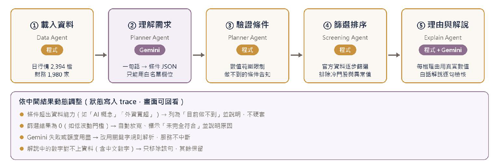
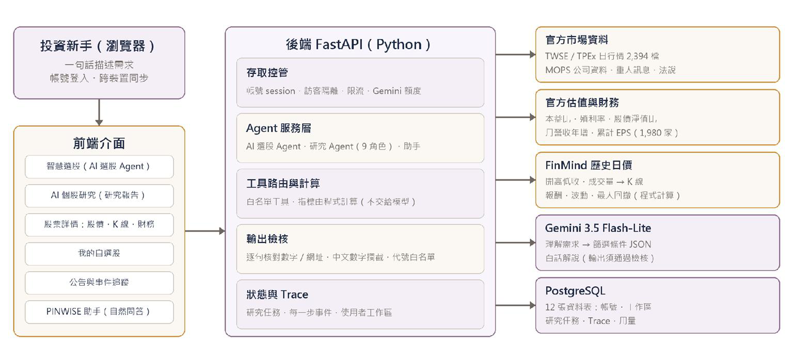

新手缺的不是資訊，而是看懂與判斷的能力。
PINWISE 不替你決定買哪一檔，而是讓每個數字看得懂、查得到、算得出來：
AI 負責理解需求與白話解說，數字與篩選由程式依官方資料計算，買不買由使用者自己決定。
評審指出「看不到的地方」，決賽逐項補上並可在 Demo 中驗證
| 初賽評審意見 | 決賽版做法 | 見頁 |
|---|---|---|
| 較沒看到 Agent 與使用者的互動 | 研究前跳出「我理解你想研究…」讓使用者確認；6 題偏好問卷，結果標示「已參考你的偏好」；研究可暫停／繼續／取消；每則回答可給「有用／還好／很糟」回饋；助手能接續上一題追問 | P7 |
| 安全治理沒提到 | 公開展示改為訪客隔離（每位訪客獨立工作區與短效憑證）；回饋文字存檔前自動遮蔽 email／手機／身分證；研究前人工確認；Gemini 額度與限流；全程 trace | P11 |
| 資料即時性處理方式未提及 | 整理每個來源的更新頻率、快取時間與畫面標示；行情一律顯示資料日期並註明「非即時」；追蹤股票在網頁開啟時每 10 分鐘檢查一次 | P9 |
| 可擴散未提及 | ESG 專區以獨立資料模組加入，既有 Agent 不需修改；ETF 成份股接上 8 家投信約 113 檔；以公開網址部署供試用（Level 3） | P14 |
| 驗證、token 花費（加分） | 以 30 次真實研究量測：完成者中位數 9.7 秒、5,068 tokens；後端自動化測試由 153 項增至 227 項 | P12 |
| 安全與治理可再強化 | Gemini 500／503 自動重試一次，429 不重試；失敗一律明確告知，不以假答案頂替 | P11 |
＊「刻意不做」：合理價格、進場時機、漲跌預測，與「不替使用者決定」的定位一致，詳見 P13。
台股新手面對大量分散資訊，難以判斷意義與可靠性
超過一半的新手靠社群與親友做決策，來源難以追溯；缺的是能「看得懂、找得到、查得到」的研究流程。
匿名線上問卷（Level 1 需求驗證），共 28 份有效回覆
方法：以 Kano 模型分析 5 項功能的需求類型（每項設計「有／沒有」正反雙問），並以阻力分析整理換用新工具的猶豫原因。
| 功能 | 主要分類 | 加分度 | 缺少時扣分 |
|---|---|---|---|
| 風險監控／異常提醒 | 期望需求 | 0.68 | -0.43 |
| 推薦理由解釋 | 期望需求 | 0.68 | -0.36 |
| 知識補充（新手教育） | 無差別（魅力需求緊追） | 0.54 | -0.32 |
| 新聞快報 | 無差別 | 0.46 | -0.25 |
| AI 選股建議 | 無差別 | 0.44 | -0.11 |
發現 1｜新手要的不是結論，而是理由與風險提醒：最強的期望需求是「推薦理由解釋」與「風險監控」，單給選股建議反而最弱。
兩項期望需求都已落地：推薦理由→ 每檔選股附理由、白話說明與走勢／波動／回撤；風險監控→ 追蹤股票單日漲跌超過 7%、距半年高點回落超過自訂提醒線時，在網頁通知。
＊樣本數 28，分類為初步結果；部分功能票數接近，不宜過度推論。
不是替你選股，而是陪你學會選股
| 頁面 | 新手可以做什麼 |
|---|---|
| 智慧選股 | 一句話找股票或 ETF；每檔附理由、白話說明，卡片加上近 6 個月走勢、波動、最大回撤 |
| AI 標的研究 | 研究前確認問題；產出報告、風險、失效條件與後續觀察條件，每步 trace 可回看 |
| 我的追蹤 / 公告與事件 | 收藏、送去研究；追蹤股票的新公告與大漲大跌在鈴鐺通知，公告可交給助手白話解釋 |
| 股票比較 新增 | 同一組標準並排比較；ETF 可看成份股與重疊程度 |
| 我的投資足跡 新增 | 研究與選股歷程、三段回饋、學習徽章、AI 查核紀錄、離目標還有多遠試算 |
| ESG 專區 新增 | 上市櫃公司自行申報的 9 個 ESG 揭露主題與是否經第三方驗證；只呈現揭露，不評分 |
| 學習專區 / 新手導覽 | 名詞查找、常見問題、閱讀指南；主要頁面有逐步高亮的導覽 |
| PINWISE 助手 | 自由提問；會接續上一題的標的，數字回答經核對才顯示 |
| 資料與證據中心 / 市場總覽 | 查看每個資料來源的狀態、日期與授權 |
教育型 Agent：結果之外，同時解釋「這個數字代表什麼、該留意什麼」；做不到就直說，不補上看似合理的數字。
模型負責理解與解說，程式負責資料與計算
| 做法 | 能做到 | 做不到 |
|---|---|---|
| 傳統條件選股網站 | 條件篩選、圖表 | 聽不懂一句話需求，也不解釋「為什麼」 |
| 一般 AI 聊天機器人 | 自然語言對話 | 數字可能幻覺、無官方出處、無法真正篩選全市場 |
| PINWISE Agent | 理解→規劃→呼叫官方資料→程式計算→檢核→解說，依中間結果放寬或改走備援 | 刻意不下單、不給買賣指令 |

30 次真實研究共寫入 848 筆事件；每步記錄來源、狀態、耗時與資料日期，畫面上即時顯示並可回看。
回應初賽意見：不只在背後查資料，每一步都讓使用者看得到、改得了、喊得停
| 功能 | 使用者做什麼 | Agent 怎麼回應 |
|---|---|---|
| 智慧選股 | 一句白話：「想存股領股息、不要波動太大」 | 列出 AI 理解的條件與篩選漏斗；做不到的條件直說；結果附理由與白話 |
| AI 標的研究 | 確認問題、隨時暫停或取消 | 即時顯示 9 個角色的進度；完成時通知；產出可一鍵追蹤的觀察條件 |
| PINWISE 助手 | 連續追問：「0056 殖利率？」「那跟 0050 比呢？」 | 記得上一題標的；錯字與同音字依原意理解；數字經核對才顯示 |
| 公告與事件 | 點「詢問助手」 | 依公告內容白話解釋代表什麼、該留意什麼 |
| 追蹤與通知 | 設定回落提醒線（10%／15%／20%） | 網頁開啟時每 10 分鐘檢查，大漲大跌、新公告、資料異常在鈴鐺通知 |
| 我的投資足跡 | 對回答給三段回饋、寫意見 | 回饋寫入 AI 查核紀錄；累積學習徽章與歷程 |
Agent 主動規劃與執行，但關鍵節點（要研究什麼、要不要繼續、要不要追蹤）都交回使用者；系統不會替使用者下單或給出買賣指令。
Vue 前端 × FastAPI 後端 × 官方資料工具 × PostgreSQL

| 來源 | 內容 | 規模／更新 |
|---|---|---|
| TWSE／TPEx OpenAPI | 上市櫃日行情（含 ETF） | 2,394 檔／每交易日 |
| 官方估值與財務 | 本益比、殖利率、月營收年增、EPS | 1,980 家／每日至每季 |
| MOPS（經 TWSE／TPEx） | 公司資料、重大訊息、法說 | 上市櫃／每日 |
| FinMind | 歷史日價（K 線、報酬、波動） | 依查詢／每交易日 |
| ESG 揭露 新增 | TWSE／TPEx 公司自行申報的 9 個 ESG 主題 | 上市櫃／年度 |
| ETF 成份股 新增 | 8 家投信公開揭露的持股與權重 | 約 113 檔／每日 |
| Google Gemini | 理解需求、白話解說（非證據來源） | 3.5 Flash-Lite |
後端同時提供打包後的前端，一個網址即可使用；以公開網址供評審與使用者試用，金鑰只存在伺服器端設定，不進程式碼庫。
資料品質：每筆保留來源與資料日期並標示「非即時」；缺值標示「未取得」不以估計補上；殖利率 >15% 視為異常、成交金額 <1,000 萬元視為冷門股並排除。
回應初賽意見：用的是官方日資料，所以每個數字都誠實標示「多新」
| 資料 | 官方更新頻率 | 系統快取 | 畫面上怎麼標示 |
|---|---|---|---|
| 日行情（收盤） | 每交易日收盤後 | 5 分鐘 | 「日收盤 52.3 · 2026-11-10」並註明非即時 |
| 估值與財務 | 每日至每季 | 30 分鐘 | 附資料期間，例如「9 月營收年增」 |
| 重大訊息／公告 | 每日 | 依請求節流 | 公告日期；追蹤股票網頁開啟時每 10 分鐘檢查 |
| 公司基本資料 | 不定期 | 12 小時 | 取得失敗時改用上次成功的名單 |
| ETF 成份股 | 投信每日揭露 | 12 小時 | 投信名稱、資料日期與原始連結 |
| ESG 揭露 | 年度 | 12 小時 | 報告年度與是否經第三方驗證 |
目標使用者是做中長期判斷的新手，問卷顯示他們需要的是「理由與風險」而非秒級報價；使用官方開放資料也確保授權清楚、可追溯。來源狀態集中在「資料與證據中心」，官方資料無法取得時會在鈴鐺通知。
真實官方資料 × 真實 Gemini 實測
輸入：「我是新手，想找配息穩定、本益比不要太高的股票」
AI 理解：個股、殖利率 ≥ 4%、本益比 ≤ 15 倍、低波動
2,394 → 個股 2,004 → 殖利率 582 → 本益比 402 → 成交金額 167 → 排除異常 164 → 計算波動 30 → 低波動 10
| 結果（前 3 檔） | 殖利率 | 本益比 | 年化波動 |
|---|---|---|---|
| 2387 精元 | 11.1% | 12.1 倍 | 20.75% |
| 2731 雄獅 | 8.92% | 8.83 倍 | 20.99% |
| 9927 泰銘 | 8.18% | 10.27 倍 | 16.75% |
| 標的 | 近 6 月報酬 | 年化波動 | 最大回撤 | 卡片上另外顯示 |
|---|---|---|---|---|
| 2330 台積電 | -0.22% | 31.99% | -17.41% | 殖利率 0.98%、本益比 25.91 倍、9 月營收年增 +54.65% |
| 0056 元大高股息 | +16.61% | 28.5% | -16.26% | 前三大成份股：南亞 9.88%、華南金 4.64%、中信金 4.29% |
每個數字旁有 ⓘ 白話解釋，並附一句總結，例如「近 6 個月漲 16.61%，波動中等，期間最多曾下跌 16.26%。」
研究前確認問題 → 9 個角色依序執行並即時顯示 → 摘要回答成長動能與風險，首次出現的名詞附白話 → 產出 3 項失效條件與觀察條件並可一鍵追蹤；輸出檢核 0 句被移除，每步 trace 可回看。
ESG：依 E／S／G 列出溫室氣體、能源、水資源、董事會等 9 個主題的揭露數字與驗證情況，可一次看追蹤清單的摘要。比較：同一組標準並排，ETF 可比成份股重疊。
＊個股僅為功能示範，不構成投資建議。
Agent 負責研究與解釋，人負責決定
| 風險 | 控制措施 |
|---|---|
| AI 幻覺／數字錯誤 | 數字由程式依官方資料計算；逐句核對數字與網址（含中文數字、單位換算），對不上只移除該句並記錄 |
| 誤導新手 | 不用「買進／賣出」指令；不給唯一合理價、進場時機與漲跌預測；排除冷門股與異常殖利率；槓桿／反向 ETF 警示 |
| 失控的自動執行 新增 | 研究前由使用者確認；執行中可暫停、繼續、取消；同一使用者同時只能跑 1 個研究 |
| 看不懂而誤用 | 每個數字附 ⓘ 與一句白話；輸入錯誤時轉介正確功能 |
| 提示注入 | 新聞與網頁內容只當資料；工具白名單；模型不能新增來源網址或股票代號 |
| 個資與帳號 | 不收集真實姓名；密碼 scrypt 加鹽雜湊；token 只存雜湊、30 天到期；每分鐘 10 次嘗試上限；回饋文字存檔前遮蔽 email／手機／身分證 |
| 公開展示隔離 新增 | 每位訪客取得後端簽發的短效憑證（4 小時），研究、追蹤與對話各自獨立，互相看不到；限定允許的網址來源 |
| 金鑰與濫用 | 金鑰只在後端；每分鐘限流；Gemini 每日呼叫與 token 上限；額度用完時在鈴鐺通知 |
| 外部服務失敗 | Gemini 500／503 自動重試一次，429 不重試；仍失敗就明確顯示失敗步驟與原因，可重試，不以假答案頂替 |
| 可追溯 | 每次研究保存每步工具、輸入輸出、耗時與資料日期；使用者回饋進入 AI 查核紀錄 |
| 法規 | 定位為投資教育與研究輔助，附免責聲明 |
AI 只負責「理解需求」與「白話解說」，不負責數字；AI 寫出的每一句都要能對應到證據才會顯示。系統寧可說「目前做不到」或「資料未取得」。
可重現的測試 × 真實執行紀錄 × 失敗情境
| 指標 | 初賽目標 | 決賽實測 |
|---|---|---|
| 回應時間 | 研究 < 60 秒 | 21 次完成的研究：中位數 9.7 秒，最長 16.3 秒 ✅ |
| 單次研究成本 | < 10,000 tokens | 中位數 5,068 tokens ✅；產業型問題較高（3 次超過 10,000，最高 20,824） |
| 數字可追溯率 | ≥ 98% | 2330 研究 100%；數字由程式產生，解說逐句核對 |
| 失敗情境處理 | ≥ 90% | 9 次失敗全部明確告知原因：8 次外部 Gemini 錯誤、1 次不存在的代號（中止且不猜測） |
| 選股理由正確率 | 100% | 理由由程式依實際數值產生（例如寫出實際波動數值） |
| 新手理解度 | 提升 ≥ 20% | 【待填：試用前後測結果】 |
| 情境 | 系統行為 |
|---|---|
| 不存在的代號 | 中止並說明，不猜測公司 |
| 模型寫出無證據數字 | 只移除該句，其餘保留 |
| Gemini 暫時無法服務（503） | 自動重試一次；仍失敗則顯示失敗步驟並可重試 |
| Gemini 額度用盡 | 選股改用規則解析並告知；鈴鐺通知額度已用完 |
| 來源逾時或日期較舊 | 標示缺漏或資料日期，不以舊價冒充最新 |
＊實測數據取自系統資料庫中的研究紀錄（research_jobs、research_events），可在「資料與證據中心」與研究歷程回看。
問卷開放題「你希望投資工具幫你什麼？」→ 歸納 8 類 → 對應功能
| # | 使用者需求 | 次數 | 決賽版對應 | 狀態 |
|---|---|---|---|---|
| 1 | 不知道買什麼，需要推薦與理由 | 7 | 選股理由、潛在風險、篩選邏輯說明；依偏好換算一張金額 | 部分完成 |
| 2 | 看不懂，需要新手教學 | 5 | 名詞查找、常見問題、閱讀指南、逐步導覽、「清楚易懂」說明風格 | 已完成 |
| 3 | 看不到資料，需要圖表 | 4 | ETF 成份股（8 家投信）、近一年報酬、選股卡片 6 個月走勢 | 已完成 |
| 4 | 怕賠錢，需要風險提醒 | 3 | 波動、最大回撤、失效條件、回落提醒線、異常數字提示 | 部分完成 |
| 5 | 消息太慢，需要推播 | 2 | 網頁開啟時每 10 分鐘檢查新公告與大漲大跌 | 部分完成 |
| 6 | 想知道未來會漲還是跌 | 2 | 列出支持條件、反方風險與失效條件 | 部分完成 |
| 7 | 不知道離目標還多遠 | 1 | 投資足跡「離目標還有多遠」試算達成率與每月缺口 | 已完成 |
| 8 | 操作太複雜 | 1 | 多數頁面一頁不捲動、空狀態有下一步、新手導覽 | 部分完成 |
另有 3 則超出工具範圍或無效回覆，不列入。
已以公開網址部署供試用。【待填：試用人數、前後測或滿意度結果】
回應初賽意見：新資料是「多插一個模組」，不是重寫系統
選股、研究、追蹤的 Agent 程式都不需修改。ETF 成份股同樣以模組方式接上 8 家投信。
| 對象 | 怎麼用 |
|---|---|
| 券商新手引導 | 開戶後的新手教育模組，以 API 整合進券商 App |
| 大學理財課程／投資社團 | 教學工具：同一題讓學生比較「一般 LLM 回答」與「可追溯研究」 |
| ETF／基金、政府公開資料 | 同一套「程式算數字、AI 白話解說、逐句檢核」架構，套用到其他公開資料解讀 |
教育型 Agent、模型與程式分工、誠實的 Agent（做不到就說明）、逐句事實檢核：一句錯不會整段作廢。
依賽事規定匿名，僅列角色
| 期間 | 隊長 | 隊員 A |
|---|---|---|
| 9/20–9/26 | 討論＋設計問卷 | 討論＋設計問卷 |
| 9/27–10/16 | 撰寫企畫書、串接資料庫＋驗證資安、製作影片 | 開發前端＋API、問卷分析、影片規劃 |
| 10/17–11/13 決賽準備 | 【請確認】公開部署、Demo 影片、決賽簡報 | 【請確認】前端改版、選股／研究／助手強化、ESG 與通知、使用者回饋彙整 |
| 11/21 | 決賽 Demo 與答詢 | |
| 資源 | 用途 | 授權 |
|---|---|---|
| Google Gemini API | 理解需求、白話解說 | Gemini API Terms |
| TWSE／TPEx OpenAPI | 行情、估值、營收、EPS、ESG | 政府資料開放授權 |
| MOPS | 公司資料、重大訊息、法說 | 官方使用條款 |
| FinMind | 歷史日價 | FinMind 條款 |
| 各投信 ETF 持股揭露 | ETF 成份股與權重 | 各投信網站使用條款 |
| Vue 3／Vite | 前端框架與建置 | MIT |
| FastAPI／Uvicorn／HTTPX | 後端框架與 HTTP | MIT／BSD-3 |
| google-genai／PostgreSQL | Gemini SDK、資料庫 | Apache-2.0／PostgreSQL License |
| ngrok | 公開網址展示 | ngrok 服務條款 |